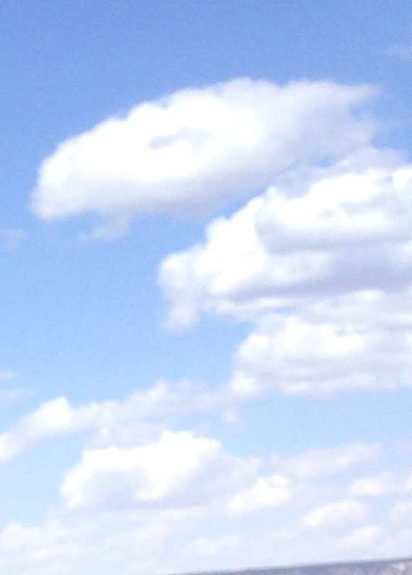
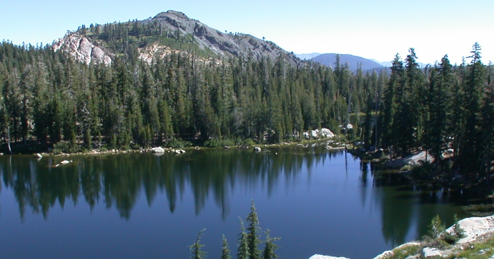
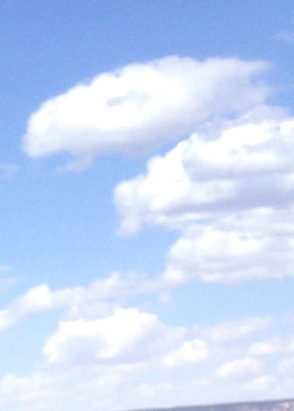
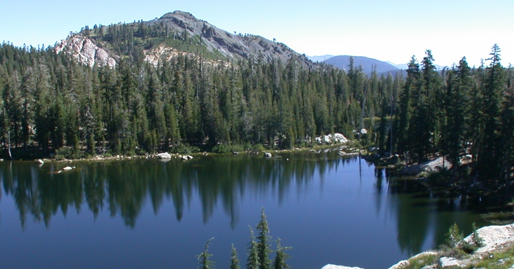
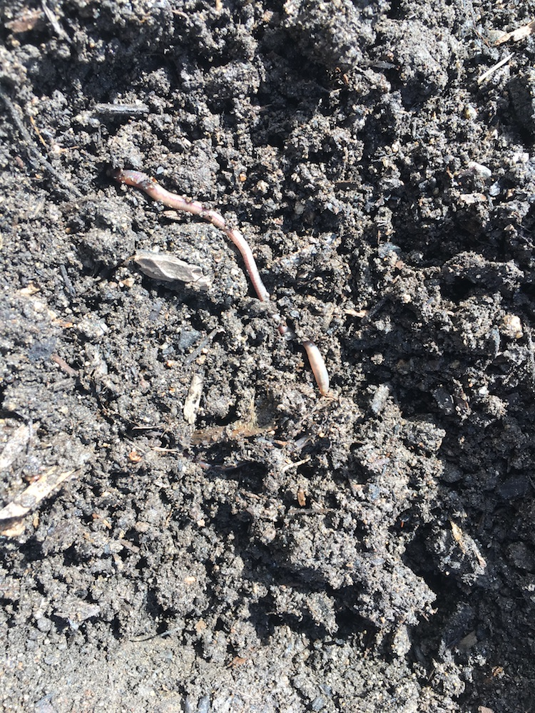

are U
still Curious?
Sustainable solutions everywhere
 
Sustainable solutions everywhere
 What are you doing to strengthen your being in ways that are supported by science and can bring you to your highest potential? How then will you use this potential to lead and participate in the next step toward a life that is lived with purpose and service? Live your best self!
i'm Don

I am interested in sustainablilty. Our Planet supports us with life in abundance. As we learn more it is apparent that humans have not maintained our responsibility to long-term survival of the eco-system. I believe that conscousness is raising with regard to the challenges as well as solutions; some proven and some potential. I would like to support a continuing evolution of being in balance with; whether it be our own personal issues, how we are treating each other, or how we treat our mother Earth and all of our fellow species.
A Stanford Professor in statistics (Name Unknown) "Facts without theory is nonsense. Theory without facts is bullshit."
Investigate what is not working.
Seek solutions to the problem.
Educate to bring change.
The United States experienced the dust Bowl 1920's due to lack of crop rotation and composting for regenerating soil. Petroleum products were introduced after WWII. Nitrogen and phosphates to green crops in 50's, but with loss of nutrients. As I was growing up in the 1950's in an agricultural area I observed the start of large corporations taking over family farms and introducing herbacides and various other sprays to the crops to control insects as well. By the late 60's we were having conversations about how the cancer rates were so much higher than what we experienced in our youth. As I have continued to observe the evolution of GMO plants and herbacides, I continue to see the reduction in the overall health of the population, along with the associated higher healthcare costs. I believe there is a direct coorelation between the use of GMO plants along with the herbacides / pesticides and the health issues we are experiencing. Research has shown that the GMO, herbacide model is not working as the crop yields are dropping each year. There are farmers that are now changing that paradigm back towards healthy soil and organic methods that produce much higher crop yield.
Resources for Soil Regeneration:
The following movie is about Apricot Lane Farms: a traditional foods farm started by John and Molly Chester, a husband and wife team, who left their jobs in Los Angeles to become farmers and pursue their dream vision of starting
Apricot Lane
Farms in 2011. Located 40 miles north of Los Angeles, the farm is dedicated to the mission of creating a well-balanced eco-system and rich soils that produce nutrient-dense foods while treating the environment and the animals with
respect.
Apricot Lane farm residents include pigs, goats, sheep, chickens, ducks, guinea hens, horses, highland cattle, and one brown swiss dairy cow named “Maggie.” Many of which, you will meet in the BIGGEST LITTLE FARM. The land consists of
Biodynamic Certified avocado and lemon orchards, a vegetable garden, pastures, and over 75 varieties of stone fruit. (Above explanation lifted from The Biggest Little Farm website)
I am so excited by this clear example of the ability to turn our entire food production system to healthy sustainbable nutrient dense foods within seven years. (Highly recommend this movie / documentary with great cinematography).
The Biggest Little Farm Movie
Dr. Zach Bush is passionate about regenerating our soil to bring back health to produce nutrient dense foods without the need for genetically modified organisms and no herbacides or pesticides.
Dr. Zach Bush
Regeneration International is a website with many resources that show how farming techniques can help in reversing climate change by rebuilding soil organic matter and restoring biodiversity.
Regeneration
International
Understanding Ag is a consulting company that provides education and support for farmers so that they may family farmer future with a balanced ecosystem.
Understanding Ag
Kiss the Ground is and organization with much the same purpose as my wesite (sustainability and regeneration). They are starting with soil.
Kiss The Ground
Green Bronx Machine is educating and training students in building an agriculture system that is supportive of the health and well being of the local communities in which they live and serve.
Green Bronx Machine
Baker Creek carries one of the largest selection of seeds from the 19th century.
Baker Creek Seeds
As stated on their web site, Seed Savers Exchange
aims to conserve and promote America’s culturally diverse but endangered garden and food crop heritage for future generations by collecting, growing, and sharing heirloom seeds and plants.
Seed
Savers Exchange

Humans have polluted most of the water on the planet. It is time for us to take this matter seriously and provide the restoration processes that have been tested with success. Additionally, we need to cease the use of toxic elements
that pollute our source of life.
Resources for Clean Water:
SeaHugger: The ocean is vitally Important to the health of our planet and protecting it should be our highest priority.
FOUNDER Shell Cleave:
After witnessing first hand the devastation of human impact on the Great Barrier Reef, the coasts of Asia and Mexico, and increased plastic on the beaches at home in California, Shell Cleave decided she could no longer idly stand by
and watch her beloved Mama Ocean being used as a dumping ground. She closed down her Technical Writing Business of 25 years and founded Sea Hugger in 2017 with the help and support of her family. (Above explanation lifted from
seahugger website).
Sea Hugger
To protect our environment, health, economic well-being and community quality of life. Clean Water Action organizes strong grassroots groups and coalitions, and campaigns to elect environmental candidates and to solve environmental
and community problems. (Above explanation lifted from clean water action website).
Clean Water Action
Every day in rural communities throughout sub-Saharan Africa, millions of people suffer from a lack of access to clean, safe water. For school-aged children it's a burden that traps them in poverty. (The above was lifted from the
water project website).
The Water Project
Save the San Francisco Bay - Delta estuary for our children and future generations.
Save The California Delta
C3
Communicate
Cooperate
Collaborate
We don't have to agree on every subject. We need to look for areas where we agree and work together to build bridges. Then as we educate each other, search for and implement solutions that serve the greater good. Be respectful!
It is exciting that there are a number of organizations now picking up the baton to promote a sustainable future. While a number of these organizations are using methods posing enemies to draw attention to their cause there is still a process of raising awareness that adds value. I would prefer that organizations promote inclusive discussions with the associations they are opposing as the first step to provide collaborative activism. Rather than being against anything I would like everyone to ask the question: "Is what I am about to do providing or promoting a sustainable solution for myself, my loved ones and everyone else on the planet?"
Resources for Involvement:
Fridays For Future an organization founded by Greta Thunberg to stop global warming.
Fridays For Future
Extinction Rebellion is raising awareness of our need to address the climate breadown.
Extinction Rebellion
Sunrise Movement is raising awareness to stop climate change and create millions of good jobs in the process. This organization is behind the political "Green New Deal".
Sunrise Movement
Quantum Physics shows that everything is energy. We are one. There is a baseline of energy that works throughout the Universe and connects everything.
Resources for Energy:
Mind To Matter book:
Mind
to Matter: The Astonishing Science of How Your Brain Creates Material Reality
The Reality We Create book:
The
Reality We Create: The Influence of Beliefs and Consciousness on Our Health and Longevity
The Way of Vastu book:
The
Way of Vastu: Creating Prosperity Through the Power of the Vedas : Achieve Success Through Indian Feng Shui
Alters of Power and Grace book:
Altars of Power and
Grace:
Create the Life You Desire--Achieve Harmony, Health, Fulfillment and Prosperity with Personal Altars Based on Vastu Shastra
Celebrate Your Divinity book:
Celebrate
Your Divinity: The Nature of God and the Theory of Everything
The Greatest Achievement book:
The
Greatest Achievement: Miracle after Miracle the Easy Way
Institute Of Noetic Sciences Bridging scientific exploration and experiential discovery to better understand a timeless truth — that humanity is deeply interconnected.
Institute Of Noetic Sciences
We are in an exciting time! The expected life span has continued to rise for most of the last one hundred years. Today we face the challenges presented by toxins and processed foods which are reducing our ability to sustain an active healthy life in these added years. We are on the verge of being able to regenerate in natural ways vital organs in the body and using stem cells to enable the body to heal itself in many cases. An active nutrient dense lifestyle free of toxins is what has been shown to enable vitality into advanced age.
Resources for Healthy Aging:
Hugs - the most healing modality!
In 2011 I learned the healing power of hugs. After a bicycle accident that left me with 14 broken bones and a mild concussion, I spent 5 days in a trauma unit, and 2 weeks in a
rehab facility. Several weeks later I had surgery to have a plate put on top of my left collar bone.
During recovery as I encountered others in the community I would get many hugs each day. I became convinced that these were indeed healing. My accident was on April 11, and during the second week of September I was able to do the Five
Lakes
Hike at Alpine Meadows in the Sierras. A five mile roundtrip hike with 1000 ft elevation gain.
10 Reasons Why We Need at Least 8
Hugs
a Day
Eat Well, Sleep Well, Move Well, Stress Well
"Aging is natural, getting old is a result of the choices we make. ~ Kerry McClure"
Kerry McClure Practical Wellness
Kerry's Book "Beyond Meditation"
Kerry's Gratitude Journal
Mederi Center provides education, research as well as patient care. Donny Yance has repeatedly gone in-depth to provide health solutions on many levels. Donny's book is published in multiple languages.
Mederi Foundation
Donny's book "Adaptogens In Medical Herbalism"
Stem Cells - the bodies natural path to healing.
US Stemology
Dr. Tami Meraglia interview
SF
Stem Cell Center
Cancer Vitamin C Adjunct IV Protocol - Riordan Clinic
IVC Protocol Article
Factfulness: 10 Reasons We're Wrong About The World - It's clear we are making progress.
Factfulness: Ten Reasons
We're Wrong About the World--and Why Things Are Better Than You Think
GapMinder Facts and Charts - Very Interesting Site that supports Factfulness
What I gathered from this is hopeful yet we need to educate as income increases so that they don't follow the western paradigm of soil destruction and poor nutrition. When people earn more $ and they can eat two bowls of rice they start down the path of ill health with sugars etc. Need variety and clean sources. See the discussion on Soil Regeneration above.
Some Auto Makers, Some Boat Makers, Some Airplanes, etc.
Tesla
Mercedes Electric
Ford
Focus Electric
Why Go Plugin - Plugin America
Electrek Newsletter - All Things EV
Correct Craft produced an electric Ski Nautique in 2011 and tested it in tournament conditions.
Electric Ski Nautique
A side story about Andy Mapple whom I consider the best slalom skier I ever had the privilege of seeing on the water.
Andy Mapple
e-Genius a test electric airplane built by engineers at the University of Stuttgart.
e-Genius
Clean alternatives that can replace fossil fuels and lower carbon emmisions. AGallup poll in March of 2019 shows that most of the U.S. population supports reducing fossil fuel use.
Resources for Renewable Energy:
Rocky Mountain Institute and Amory B. Lovins book
"Reinventing Fire" shows a way forward that provides a clean sustainable environment by 2050 while saving trillions.
Rocky Mountain
Institute
Reinventing
Fire
Jeremy Rifkin explains how the five-pillars of the Third Industrial Revolution will create thousands of businesses, millions of jobs, and usher in a fundamental reordering of human relationships, from hierarchical to lateral power,
that will impact the way we conduct commerce, govern society, educate our children, and engage in civic life. (Lifted from the expanation of the book.)
The Third Industrial Revolution
In 2007 global energy usage was (all forms) 16.1 TW, with global electricity being 1.8 TW. It is possible to genertate all of our energy needs from clean renewale sources. Stanford Professor Mark Jacobson has done research and mapped
out how we might use renewables exclusively.
Renewable by 2050
We only need to look out the window at nature to see that diversity produces the strongest solutions. This seems true at the universe level as well as the micro level. Yet as humans we separate ourselves and dimenish the strength of
diversity. At this time we need to embrace diversity in all forms to enable our ability to collaborate.
In my experience one of the best examples of this realization is:
Imagine there's no heaven
It's easy if you try
No hell below us
Above us only sky
Imagine all the people
Living for today...
Imagine there's no countries
It isn't hard to do
Nothing to kill or die for
And no religion too
Imagine all the people
Living life in peace...
You may say I'm a dreamer
But I'm not the only one
I hope someday you'll join us
And the world will be as one
Imagine no possessions
I wonder if you can
No need for greed or hunger
A brotherhood of man
Imagine all the people
Sharing all the world...
You may say I'm a dreamer
But I'm not the only one
I hope someday you'll join us
And the world will live as one
Michelle Obama's book Becoming is an excellent read. Her intelligence, candor, wit, and exellent ability to tell a story while educating is a great example of diversity that supports our higher purpose. Plus it is a
fun read!
Becoming - Michelle Obama
None of the above subjects will ever come to complete fruition unless we somehow bring a state of amity to all reaches of the planet.
"We Are One" It is time for a new way of thinking!
In the last 100 years or so the human species has developed methods of destruction that threatens our very survival. Chemical, biological, or nuclear weapons all have the potential to end life on this planet.
We must all work together to bring a new response to each potential confrontation. When something controversial happens we often get defensive and experience the desire to lash out in reaction. In each of these instances there lies an
opportunity to decide in favor of what is best for all.
In other words:
“Mindfulness is a pause. It’s the space between reaction and response. That is where choice lives.”
~ Kerry McClure
How are you choosing to pause and respond?
Resources for Peace:
We have the privilege in our community of having a Culture Of Peace Commission. It is presented as a community-wide movement and promotes "Listening So That Everyone's Heard"
Culture
Of
Peace Commission
The Beyond War organization is a continuation of work started in the 1980's to educate on the need for humankind to adopt "A New Way of Thinking" due to weapons where the destructive
potential is total annihilation.
Beyond War Northwest
"Breakthrough: Emerging New Thinking" is a book published by Beyond War in the late 80's
Breakthrough
Book at Amazon
Additionally Portland State University has a class at where students learn the principles and assist in reviewing materials that fit the Beyond War philosophy.
BW
Class Portland State University
The Compassionate Listening Project is A non-profit organization dedicated to empowering individuals and communities to transform conflict and strengthen cultures of peace.
Compassionate Listening Project
The M. K. Gandhi Institute for Nonviolence is dedicated to teaching nonviolence as a way to create a sustainable and just world for all.
Institute For Nonviolence
Education is a key component of any forward plan as it is necessary to pass lessons learned to the next generation.
"Life Essentials".
The downside's of not acting on the subjects presented here are enormous and potentially life threatening. Education is key. How do we expand our education process to teach vital information? How do we collaborate across generational
divides to assure continuity on essential solutions?
Resources for Education:
A creative way of assuring that education is available to the masses without high expenses.
Khan
Academy
A high variety of courses at relatively low cost.
Udemy Online Courses
For anyone looking to upgrade their reasoning abilities. Higher cost.
The Foundation for Critical Thinking
I am most interested in those topics that enable a sustainable future for the planet and all living on it.
CONTACT ME